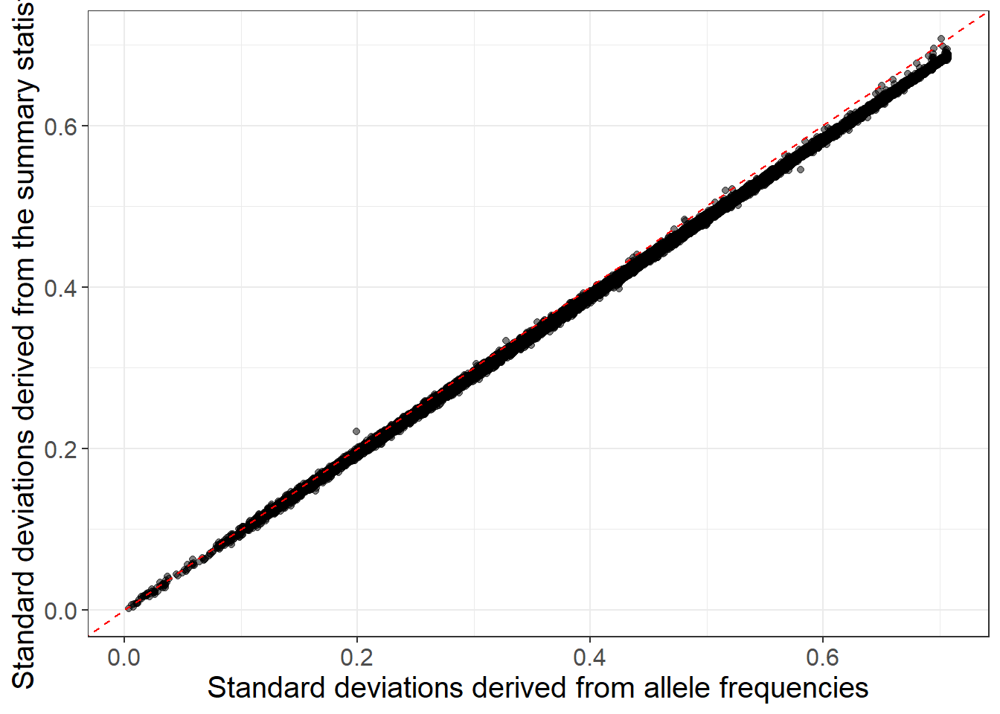
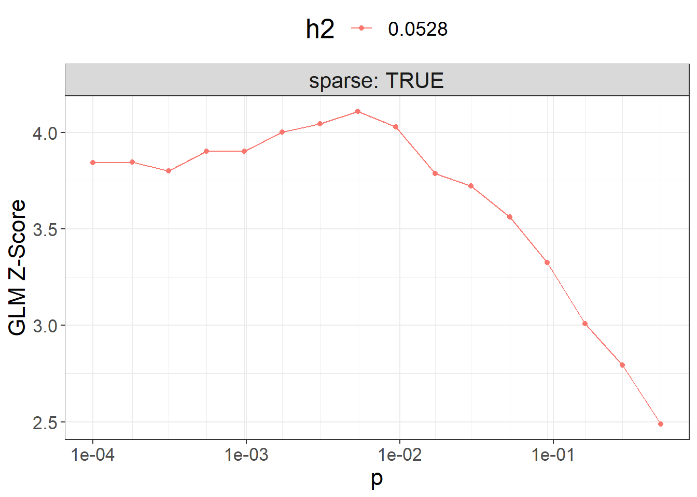

Chapter 7 Polygenic scores (PGS)
PGS methods are the main topic of my research work. These are the main methods currently available in the packages:
penalized regressions, with individual-level data (Privé, Aschard, et al. (2019) + tutorial)
Clumping and Thresholding (C+T) and Stacked C+T (SCT), with summary statistics and individual level data (Privé, Vilhjálmsson, et al. (2019) + tutorial)
LDpred2, with summary statistics (Privé, Arbel, et al. (2020) + tutorial)
lassosum2, with the same input data as LDpred2 (Privé, Arbel, et al. (2022) + tutorial)
7.1 Example: LDpred2 and lassosum2
You should also check the other tutorial mentioned before.
7.1.1 Preparing the data
Let us first read the data produced in 4.3:
library(bigsnpr)#> Loading required package: bigstatsrobj.bigsnp <- snp_attach("tmp-data/GWAS_data_sorted_QC.rds")
G <- obj.bigsnp$genotypes
NCORES <- nb_cores()
map <- dplyr::transmute(obj.bigsnp$map,
chr = chromosome, pos = physical.pos,
a0 = allele2, a1 = allele1)Download some GWAS summary statistics for CAD that I derived from the UK Biobank (Bycroft et al., 2018), and prepare them in the format required by LDpred2:
gz <- runonce::download_file(
"https://figshare.com/ndownloader/files/38077323",
dir = "tmp-data", fname = "sumstats_CAD_tuto.csv.gz")
readLines(gz, n = 3)#> [1] "chr,pos,rsid,allele1,allele2,freq,info,beta,se"
#> [2] "1,721290,rs12565286,C,G,0.035889027911808,0.941918079726998,0.0361758959140647,0.0290865883937757"
#> [3] "1,752566,rs3094315,A,G,0.840799909379283,0.997586884856296,-0.0340838522604864,0.0144572980122262"sumstats <- bigreadr::fread2(
gz,
select = c("chr", "pos", "allele2", "allele1", "beta", "se", "freq", "info"),
col.names = c("chr", "pos", "a0", "a1", "beta", "beta_se", "freq", "info"))
# GWAS effective sample size for binary traits (4 / (1 / n_case + 1 / n_control))
# For quantitative traits, just use the total sample size for `n_eff`.
sumstats$n_eff <- 4 / (1 / 20791 + 1 / 323124) Note that we recommend to use imputed HapMap3+ variants when available, for which you can download some precomputed LD reference for European individuals based on the UK Biobank. Otherwise use the genotyped variants as I am doing here. Try to use an LD reference with at least 2000 individuals (I have only 1401 in this example). Please see this other tutorial for more information.
Let us now match the variants in the GWAS summary statistics with the internal data we have:
library(dplyr)
info_snp <- snp_match(sumstats, map, return_flip_and_rev = TRUE) %>%
mutate(freq = ifelse(`_REV_`, 1 - freq, freq),
`_REV_` = NULL, `_FLIP_`= NULL) %>%
print()#> chr pos a0 a1 beta beta_se freq info n_eff
#> 1 1 752566 T C 0.034083852 0.01445730 0.15920009 0.9975869 78136.41
#> 2 1 785989 G A 0.018289010 0.01549153 0.13007399 0.9913233 78136.41
#> 3 1 798959 G A 0.003331013 0.01307707 0.20524280 0.9734898 78136.41
#> 4 1 947034 T C -0.021202725 0.02838148 0.03595249 0.9924989 78136.41
#> _NUM_ID_.ss _NUM_ID_
#> 1 2 2
#> 2 4 4
#> 3 5 5
#> 4 6 6
#> [ reached 'max' / getOption("max.print") -- omitted 340206 rows ]Check the summary statistics; some quality control may be needed:
hist(info_snp$n_eff) # all the same values, otherwise filter at 70% of maxhist(info_snp$info) # very good imputation; filter e.g. at 0.7summary(info_snp$freq)#> Min. 1st Qu. Median Mean 3rd Qu. Max.
#> 0.0000027 0.1100250 0.2261357 0.2365588 0.3580946 0.9998703Then we can perform some quality control on the summary statistics by checking whether standard deviations inferred from the external GWAS summary statistics are consistent with the ones in the internal data we have:
af_ref <- big_colstats(G, ind.col = info_snp$`_NUM_ID_`, ncores = NCORES)$sum / (2 * nrow(G))
sd_ref <- sqrt(2 * af_ref * (1 - af_ref))
sd_ss <- with(info_snp, 2 / sqrt(n_eff * beta_se^2 + beta^2))
is_bad <-
sd_ss < (0.5 * sd_ref) | sd_ss > (sd_ref + 0.1) |
sd_ss < 0.05 | sd_ref < 0.05 # basically filtering small MAF
library(ggplot2)
ggplot(slice_sample(data.frame(sd_ref, sd_ss, is_bad), n = 50e3)) +
geom_point(aes(sd_ref, sd_ss, color = is_bad), alpha = 0.5) +
theme_bigstatsr(0.9) +
scale_color_viridis_d(direction = -1) +
geom_abline(linetype = 2) +
labs(x = "Standard deviations in the reference set",
y = "Standard deviations derived from the summary statistics",
color = "To remove?")
When using quantitative traits (linear regression instead of logistic regression for the GWAS), you need to replace 2 by sd(y) when computing sd_ss (equations 1 and 2 of Privé, Arbel, et al. (2022)).
When allele frequencies are available in the GWAS summary statistics, you can use them (along with INFO scores) to get an even better match:
sd_af <- with(info_snp, sqrt(2 * freq * (1 - freq) * info))
ggplot(slice_sample(data.frame(sd_af, sd_ss), n = 50e3)) +
geom_point(aes(sd_af, sd_ss), alpha = 0.5) +
theme_bigstatsr(0.9) +
geom_abline(linetype = 2, color = "red") +
labs(x = "Standard deviations derived from allele frequencies",
y = "Standard deviations derived from the summary statistics") You can still use the reference panel to do some quality control by comparing allele frequencies:
diff <- af_ref - info_snp$freq
hist(diff, "FD", xlim = c(-0.1, 0.1))Then you can filter
is_bad2 <-
sd_ss < (0.7 * sd_af) | sd_ss > (sd_af + 0.1) |
sd_ss < 0.05 | sd_af < 0.05 |
info_snp$info < 0.7 | abs(diff) > 0.07
mean(is_bad2)#> [1] 0.002410276table(is_bad, is_bad2)#> is_bad2
#> is_bad FALSE TRUE
#> FALSE 339138 410
#> TRUE 252 410df_beta <- info_snp[!is_bad2, ]Then, we compute the correlation for each chromosome (note that we are using only 4 chromosomes for faster running of this tutorial):
for (chr in 1:4) { # REPLACE BY 1:22
print(chr)
corr0 <- runonce::save_run({
## indices in 'sumstats'
ind.chr <- which(df_beta$chr == chr)
## indices in 'G'
ind.chr2 <- df_beta$`_NUM_ID_`[ind.chr]
POS2 <- snp_asGeneticPos(map$chr[ind.chr2], map$pos[ind.chr2], dir = "tmp-data")
snp_cor(G, ind.col = ind.chr2, size = 3 / 1000, infos.pos = POS2,
ncores = NCORES)
}, file = paste0("tmp-data/corr_chr", chr, ".rds"))
}#> [1] 1
#> user system elapsed
#> 36.72 0.42 13.09
#> [1] 2
#> user system elapsed
#> 48.61 0.29 14.96
#> [1] 3
#> user system elapsed
#> 45.52 0.17 13.65
#> [1] 4
#> user system elapsed
#> 38.14 0.05 11.25Then we create the on-disk sparse genome-wide correlation matrix (again using only the first 4 chromosomes, for speed in this tutorial; replace by 1:22):
for (chr in 1:4) { # REPLACE BY 1:22
print(chr)
corr0 <- readRDS(paste0("tmp-data/corr_chr", chr, ".rds"))
if (chr == 1) {
ld <- Matrix::colSums(corr0^2)
corr <- as_SFBM(corr0, "tmp-data/corr", compact = TRUE)
} else {
ld <- c(ld, Matrix::colSums(corr0^2))
corr$add_columns(corr0, nrow(corr))
}
}#> [1] 1
#> [1] 2
#> [1] 3
#> [1] 4To use the “compact” format for SFBMs, you need packageVersion("bigsparser") >= package_version("0.5").
Make sure to reinstall {bigsnpr} when updating {bigsparser} to this new version (to avoid crashes).
file.size(corr$sbk) / 1024^3 # file size in GB#> [1] 0.5756225Note that you will need at least the same memory as this file size (to keep it cached for faster processing) + some other memory for all the results returned. If you do not have enough memory, processing will be very slow (because you would read the data from disk all the time). If using HapMap3 variants, requesting 60 GB should be enough. For this small example, 8 GB of RAM should be enough.
7.1.2 LDpred2
We can now run LD score regression:
df_beta <- dplyr::filter(df_beta, chr %in% 1:4) # TO REMOVE (for speed here)
(ldsc <- with(df_beta, snp_ldsc(ld, length(ld), chi2 = (beta / beta_se)^2,
sample_size = n_eff, blocks = NULL)))#> int h2
#> 0.9795999 0.0528327ldsc_h2_est <- ldsc[["h2"]]We can now run LDpred2-inf very easily:
# LDpred2-inf
beta_inf <- snp_ldpred2_inf(corr, df_beta, ldsc_h2_est)
pred_inf <- big_prodVec(G, beta_inf, ind.col = df_beta$`_NUM_ID_`)
AUCBoot(pred_inf, obj.bigsnp$fam$CAD)#> Mean 2.5% 97.5% Sd
#> 0.5511041 0.5186029 0.5826846 0.0163816For LDpred2(-grid), this is the grid we recommend to use:
# LDpred2-grid
(h2_seq <- round(ldsc_h2_est * c(0.3, 0.7, 1, 1.4), 4))#> [1] 0.0158 0.0370 0.0528 0.0740(p_seq <- signif(seq_log(1e-5, 1, length.out = 21), 2))#> [1] 1.0e-05 1.8e-05 3.2e-05 5.6e-05 1.0e-04 1.8e-04 3.2e-04 5.6e-04
#> [9] 1.0e-03 1.8e-03 3.2e-03 5.6e-03 1.0e-02 1.8e-02 3.2e-02 5.6e-02
#> [17] 1.0e-01 1.8e-01 3.2e-01 5.6e-01 1.0e+00params <- expand.grid(p = p_seq, h2 = h2_seq, sparse = c(FALSE, TRUE))
dim(params)#> [1] 168 3Here, we will be using this smaller grid instead (for speed in this tutorial):
(params <- expand.grid(p = signif(seq_log(1e-4, 0.5, length.out = 16), 2),
h2 = round(ldsc_h2_est, 4), sparse = TRUE))#> p h2 sparse
#> 1 0.00010 0.0528 TRUE
#> 2 0.00018 0.0528 TRUE
#> 3 0.00031 0.0528 TRUE
#> 4 0.00055 0.0528 TRUE
#> 5 0.00097 0.0528 TRUE
#> 6 0.00170 0.0528 TRUE
#> 7 0.00300 0.0528 TRUE
#> 8 0.00530 0.0528 TRUE
#> 9 0.00940 0.0528 TRUE
#> 10 0.01700 0.0528 TRUE
#> 11 0.02900 0.0528 TRUE
#> 12 0.05200 0.0528 TRUE
#> 13 0.09100 0.0528 TRUE
#> 14 0.16000 0.0528 TRUE
#> 15 0.28000 0.0528 TRUE
#> 16 0.50000 0.0528 TRUEbeta_grid <- snp_ldpred2_grid(corr, df_beta, params, ncores = NCORES)
params$sparsity <- colMeans(beta_grid == 0)Then, we can compute the corresponding PGS for all these models:
pred_grid <- big_prodMat(G, beta_grid, ind.col = df_beta[["_NUM_ID_"]],
ncores = NCORES)
params$score <- apply(pred_grid, 2, function(x) {
if (all(is.na(x))) return(NA)
summary(glm(CAD ~ x + sex + age, data = obj.bigsnp$fam, family = "binomial"))$coef["x", 3]
})Note that missing values represent models that diverged substantially.
ggplot(params, aes(x = p, y = score, color = as.factor(h2))) +
theme_bigstatsr() +
geom_point() +
geom_line() +
scale_x_log10(breaks = 10^(-5:0), minor_breaks = params$p) +
facet_wrap(~ sparse, labeller = label_both) +
labs(y = "GLM Z-Score", color = "h2") +
theme(legend.position = "top", panel.spacing = unit(1, "lines"))
Then you can use the best-performing model here.
Note that you should use only individuals from the validation set to compute the $score and then evaluate the best model for the individuals in the test set.
library(dplyr)
best_beta_grid <- params %>%
mutate(id = row_number()) %>%
arrange(desc(score)) %>%
slice(1) %>%
pull(id) %>%
beta_grid[, .]To run LDpred2-auto, you can use:
# LDpred2-auto
multi_auto <- snp_ldpred2_auto(
corr, df_beta, h2_init = ldsc_h2_est,
vec_p_init = seq_log(1e-4, 0.2, 30),
burn_in = 100, num_iter = 100, # TO REMOVE, for speed here
allow_jump_sign = FALSE,
shrink_corr = 0.95,
ncores = NCORES)Perform some quality control on the chains:
# `range` should be between 0 and 2
(range <- sapply(multi_auto, function(auto) diff(range(auto$corr_est))))#> [1] 0.05495982 0.05372239 0.05382592 0.05373679 0.05246134 0.05391799
#> [7] 0.05335826 0.05374448 0.05408486 0.05228111 0.05518666 0.05399642
#> [13] 0.05319311 0.05452853 0.05345489 0.05340946 0.05523593 0.05341814
#> [19] 0.05432542 0.05519659 0.05508742 0.05415670 0.05174080 0.05220991
#> [25] 0.05260395 0.05317630 0.04996561 0.05107687 0.05268744 0.05282274(keep <- (range > (0.95 * quantile(range, 0.95))))#> [1] TRUE TRUE TRUE TRUE TRUE TRUE TRUE TRUE TRUE FALSE TRUE
#> [12] TRUE TRUE TRUE TRUE TRUE TRUE TRUE TRUE TRUE TRUE TRUE
#> [23] FALSE FALSE TRUE TRUE FALSE FALSE TRUE TRUETo get the final effects / predictions, you should only use chains that pass this filtering:
final_beta_auto <-
rowMeans(sapply(multi_auto[keep], function(auto) auto$beta_est))We can finally test the final prediction
final_pred_auto <- big_prodVec(G, final_beta_auto,
ind.col = df_beta[["_NUM_ID_"]],
ncores = NCORES)
AUCBoot(final_pred_auto, obj.bigsnp$fam$CAD)#> Mean 2.5% 97.5% Sd
#> 0.56684174 0.53486242 0.59916384 0.016400117.1.3 lassosum2: grid of models
lassosum2 is a re-implementation of the lassosum model that now uses the exact same input parameters as LDpred2 (corr and df_beta). It can therefore be run next to LDpred2 and the best model can be chosen using the validation set.
Note that parameter ‘s’ from lassosum has been replaced by a new parameter ‘delta’ in lassosum2, in order to better reflect that the lassosum model also uses L2-regularization (therefore, elastic-net regularization).
beta_lassosum2 <- snp_lassosum2(
corr, df_beta, ncores = NCORES,
nlambda = 10, maxiter = 50) # TO REMOVE, for speed hereparams2 <- attr(beta_lassosum2, "grid_param")
pred_grid2 <- big_prodMat(G, beta_lassosum2, ind.col = df_beta[["_NUM_ID_"]],
ncores = NCORES)
params2$score <- apply(pred_grid2, 2, function(x) {
if (all(is.na(x))) return(NA)
summary(glm(CAD ~ x + sex + age, data = obj.bigsnp$fam, family = "binomial"))$coef["x", 3]
})ggplot(params2, aes(x = lambda, y = score, color = as.factor(delta))) +
theme_bigstatsr() +
geom_point() +
geom_line() +
scale_x_log10(breaks = 10^(-5:0)) +
labs(y = "GLM Z-Score", color = "delta")
best_grid_lassosum2 <- params2 %>%
mutate(id = row_number()) %>%
arrange(desc(score)) %>%
slice(1) %>%
pull(id) %>%
beta_lassosum2[, .]best_grid_overall <- `if`(max(params2$score) > max(params$score),
best_grid_lassosum2,
best_beta_grid)